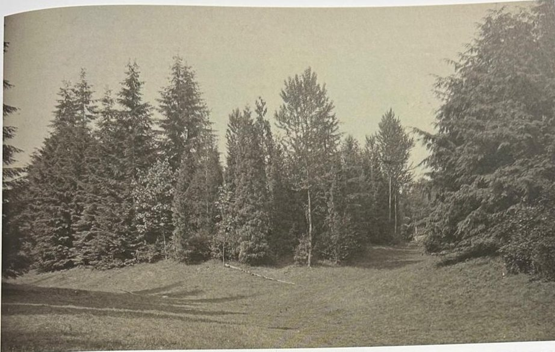
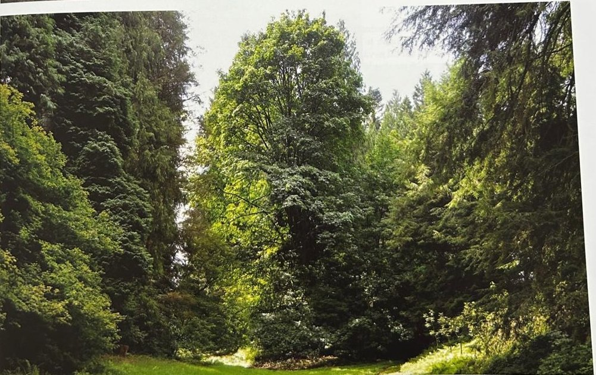
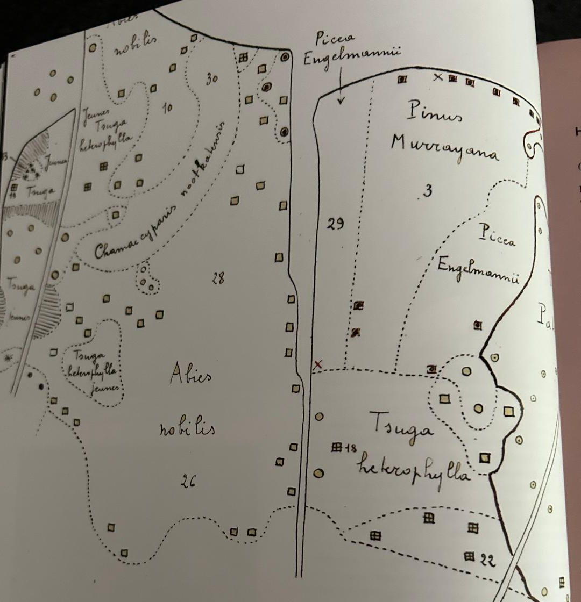
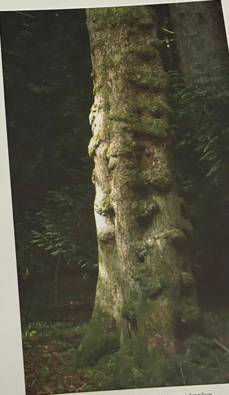
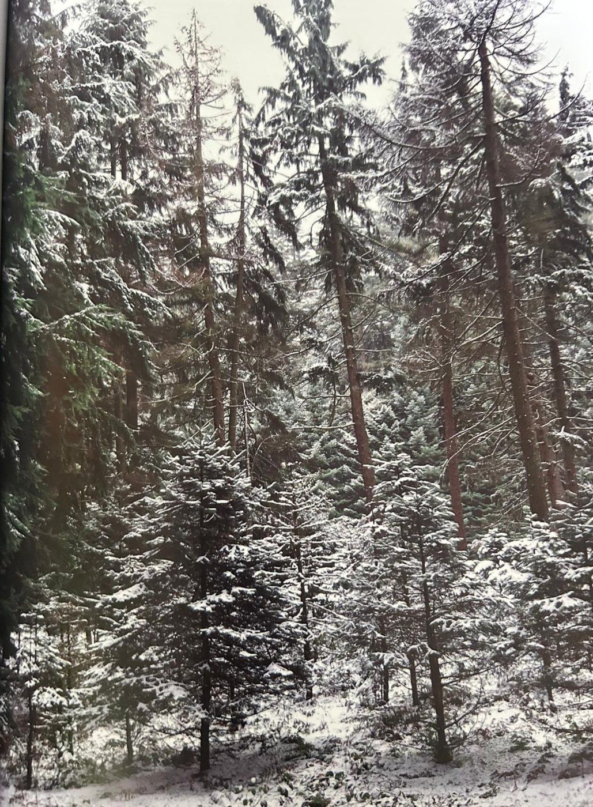

Groepen › Nieuwe Wereld
3. Washington, Cascadegebergte

Het Cascadengebergte is een bergketen in tweede linie, tussen het Kustgebergte en het Rotsgebergte in, dat zich uitstrekt over de staten Washington en Oregon om in Californië aan te sluiten bij de Sierra Nevada. De wouden hier zijn meest van het douglas-hemlock bostype. Douglas is inmiddels omwille van zijn snelle, kaarsrechte groei en zijn uitstekende houtkwaliteit in Europa als ingeburgerd te beschouwen – de houtsoort is ook onder de naam ‘oregon’ bekend.. Hemlock, minder gewaardeerd omwille van de mindere houtkwaliteit, voelt zich bij ons daarentegen nog het beste thuis, getuige daarvan de gemakkelijke natuurlijke verjonging die zich in dit deel van het arboretum overal bewijst. De groep is oorspronkelijk aangelegd op de helling volgens de hoogtezones in het gebergte. Onderaan onder meer boomsoorten uit de valleien waaronder de Grootbladesdoorns en de inmiddels verdwenen Balsempopulieren. Naarmate men hoger stijgt vindt men ook Reuzenlevenboom en Reuzenzilverspar in de menging. In het midden van subgroep 3A, het lagergelegen gedeelte, staat de hoogtekampioen van het arboretum : een rijzige Reuzenzilverspar die over 50m rijkt. Op echte berghoogte staan de Berghemlock en de Cascadenzilverspar naast Engelmansparren en Draaidennen die hier einde leeftijd zijn. Daarboven uit torenen monumentale Edelzilversparren
Uit het boek
2,97 ha · 18 soorten · 1142 bomen
- 3A en 3B: douglas–hemlock; 3C: berghemlock (blauwe glans) met Abies amabilis; 3D: reuzenlevensboom met een ring van afleggers, en westerse lork.
- De grootbladige esdoorn heeft bladeren van 30 tot 50 cm en dikke maserknollen; de reuzenlevensboom leverde totempalen en kano’s.
- Vanaf de Elisabethweide zie je het verschil tussen 1936 en vandaag: jonge sparren zijn uitgegroeid tot een hoog, gemengd bos.
- Ingedeeld in hoogtezones (3A tot 800 m, 3B 800–1400 m, 3C boven 1400 m), net zoals op de flank van de vulkanische Cascades.
- De hoogste boom van de collectie is een reuzenzilverspar in 3A; een douglas van 1903 in 3B meet 400 cm.
- Simone Balle tekende in de jaren 1940 een handkaart van 3C en 3D.





Bron: Geografisch Arboretum Tervuren. Een wereldreis rond bomen (2020), p. 94 en volgende.
Deelgroepen
- 3A – Washington - Cascade Mountains West
- 3B – Westelijke Cascaden, middengebergte
- 3C – Westelijke Cascaden, hooggebergte
- 3D – Washington - Cascade Mountains East
Soorten in deze groep (18)
- Tsuga heterophyllaWest-Amerikaanse hemlockspar · 525 bomen
- Thuja plicataReuzenlevensboom · 166 bomen
- Pseudotsuga menziesiiGewone douglasspar · 110 bomen
- Abies proceraEdelzilverspal · 69 bomen
- Abies grandisReuzenzilverspar · 57 bomen
- Abies amabilisCascadenzilverspar · 42 bomen
- Abies lasiocarpaRotsgebergtezilverspar · 40 bomen
- Tsuga mertensianaBerghemlock · 28 bomen
- Xanthocyparis nootkatensisNootkaschijncipres · 28 bomen
- Acer macrophyllumGrootbladesdoorn · 23 bomen
- Picea engelmanniiEngelmannspar · 12 bomen
- Pinus monticolaAmerikaanse witte den · 10 bomen
- Mahonia aquifoliumMahonia · 9 bomen
- Picea sitchensisSitkaspar · 7 bomen
- Larix occidentalisWest-Amerikaanse lork · 5 bomen
- Pinus contorta var. latifolia5 bomen
- Acer circinatumAmerikaanse rondbladesdoorn · 3 bomen
- Taxus species3 bomen
Tekst en foto: arboretum-tervuren.be (Koninklijke Schenking), met toestemming gebruikt.